| pid | time_point | arm | nugent_score | crp_blood | ph |
|---|---|---|---|---|---|
| pid_01 | baseline | placebo | 8 | 0.44 | 5.7 |
| pid_01 | week_1 | placebo | 7 | 1.66 | 5.2 |
| pid_01 | week_7 | placebo | 7 | 1.44 | 5.4 |
Intro to R, Quarto, and VSCode
remixed from Claus O. Wilke’s SDS375 course and Andrew P. Bray’s quarto workshop
Goals for this session
Answer the question “Why R?”
Find your way around VS Code.
Use Quarto to make notebook reports.
Begin interacting with data in R.
Discussions: discord
Ask questions in the #workshop-questions channel.
Join the Discord server: https://discord.gg/zSBTQ9ctt
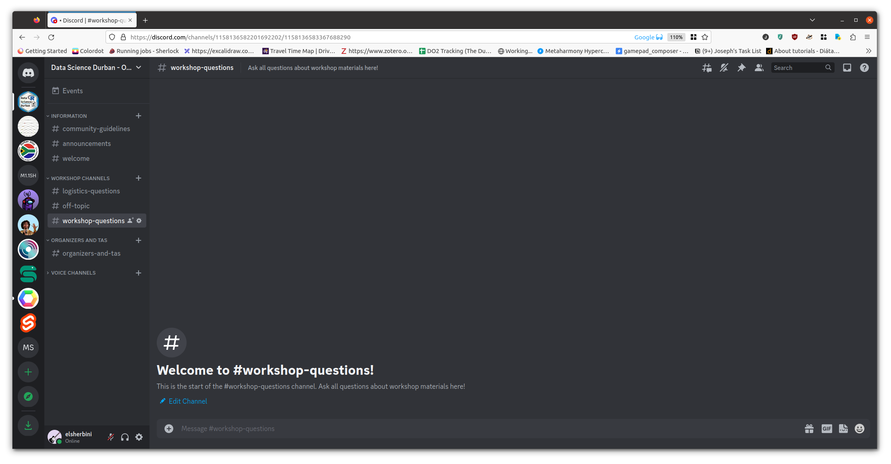
What is R?
R is a general purpose programming language that’s really well suited to statistics, manipulating tabular data, and plotting.
Why R?
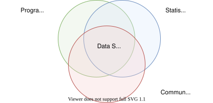
Why R?
- R is completely free and open source
- Using R connects you with a community around the whole world
- R has a huge amount of packages - code someone else wrote so you don’t have to!

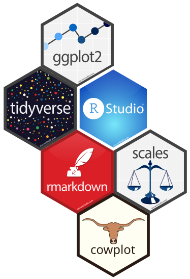
A tour of VS Code
You are already running VS Code
Your Codespace is VS Code running in a browser tab. It behaves the same as the desktop app you might have used before.
R, Quarto, and the editor extensions are already installed. There is nothing to download and nothing to set up – open the Codespace and start working.
The window layout
- The editor in the middle is where you read and write files. Open files show up as tabs across the top.
- The Side Bar shows the Explorer: the list of files in your project. Click a file to open it.
- The Activity Bar on the far left switches the Side Bar between the Explorer, search, source control, and extensions.
- The Status Bar along the bottom shows the current branch, any errors, and other information about your project.
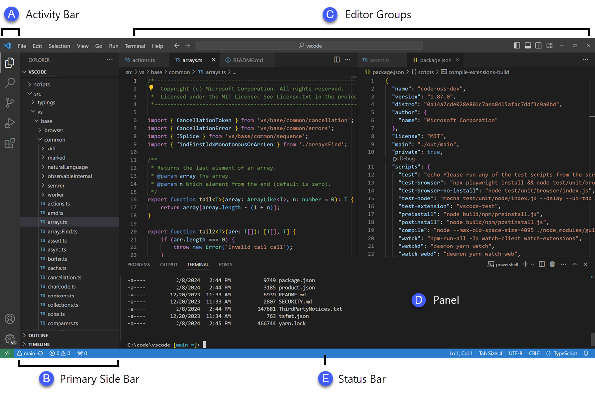
Screenshot from the VS Code user interface documentation.
The integrated terminal
The terminal is a command line built into the window. You type commands here, and this is where Pi runs.
Open it from the menu: Terminal -> New Terminal, or with the keyboard shortcut Ctrl+` (the backtick key).
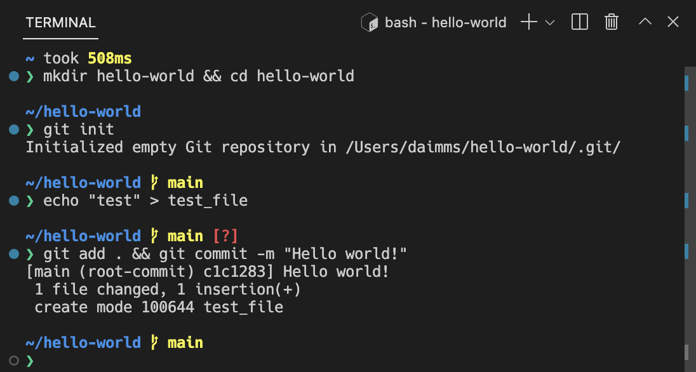
Screenshot from the VS Code terminal documentation.
Several terminals at once
You can keep more than one terminal open. Each gets a tab in the panel, and you can split the panel to see two side by side.
This is handy when Pi is running in one terminal and you want another for your own commands.
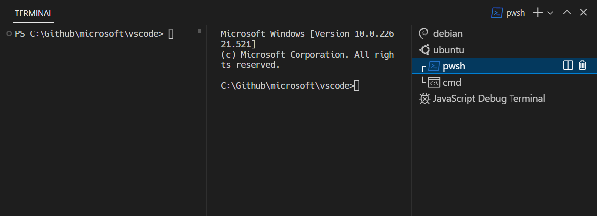
Screenshot from the VS Code terminal documentation.
Opening and editing a .qmd
A Quarto document has the .qmd extension. It is a plain-text file that mixes writing, R code, and formatting.
.Rfiles hold pure R code – useful for scripts, but no narrative..qmdfiles weave narrative, code, and output into one document – so a future reader (including future-you) can follow your reasoning alongside the code.
Open a .qmd from the Explorer and it appears in the editor. You can edit the plain-text source directly, or switch to the visual editor for a word-processor-style view. The two are the same file – changes in one show up in the other.
Render and Preview
The Preview button at the top right of an open .qmd renders the document and opens the result next to your source.
When the preview is open, Quarto re-renders each time you save, so the rendered output stays in step with the file you are editing.
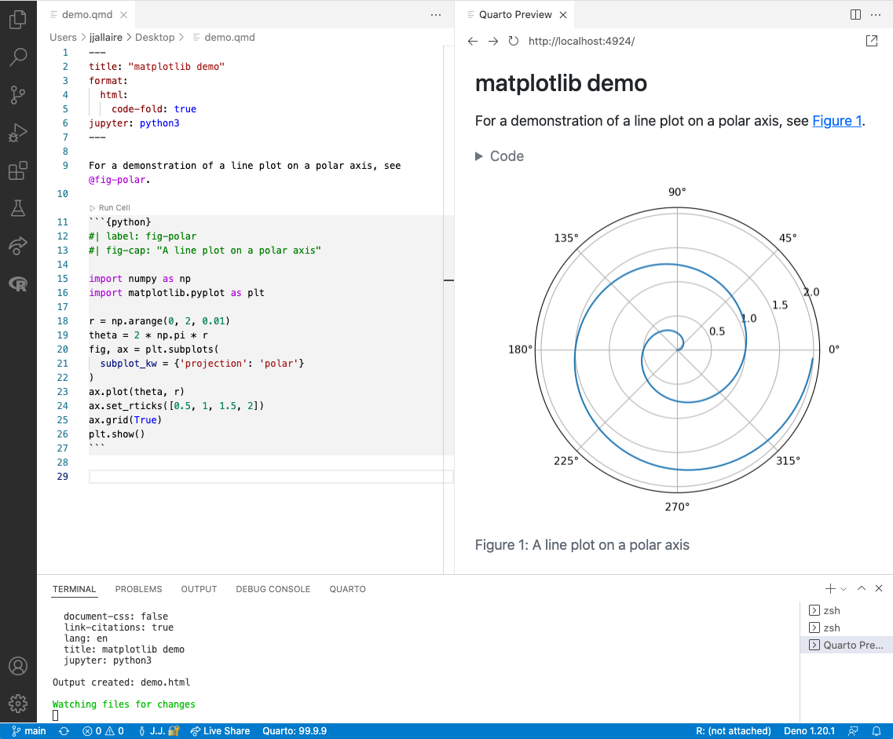
Screenshot from the Quarto VS Code documentation.
Running code cells
A code cell has a Run Cell link just above it. Click it to run that cell’s R code; the output appears inline, right under the cell.
You can run cells one at a time as you build up an analysis, without rendering the whole document.
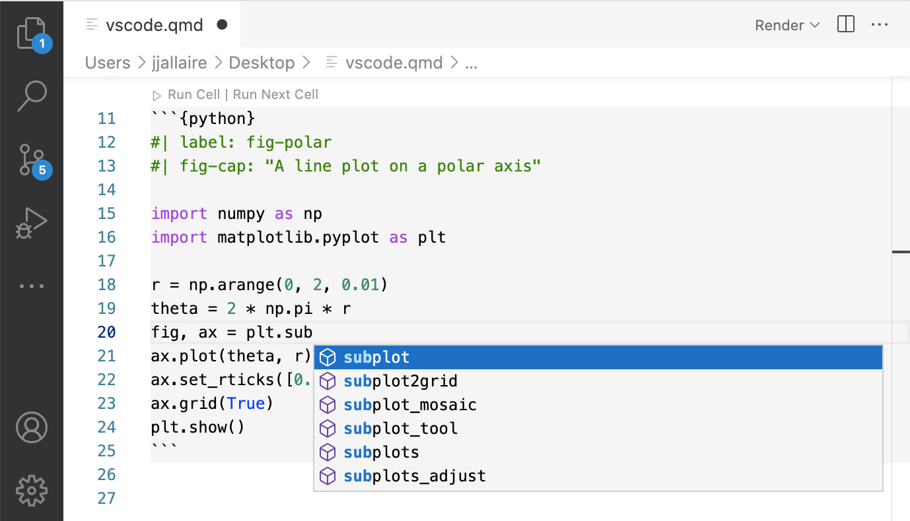
Screenshot from the Quarto VS Code documentation.
The document outline
A long document is easier to navigate with the outline, which lists the document’s headings.
Click a heading in the outline to jump straight to that section.
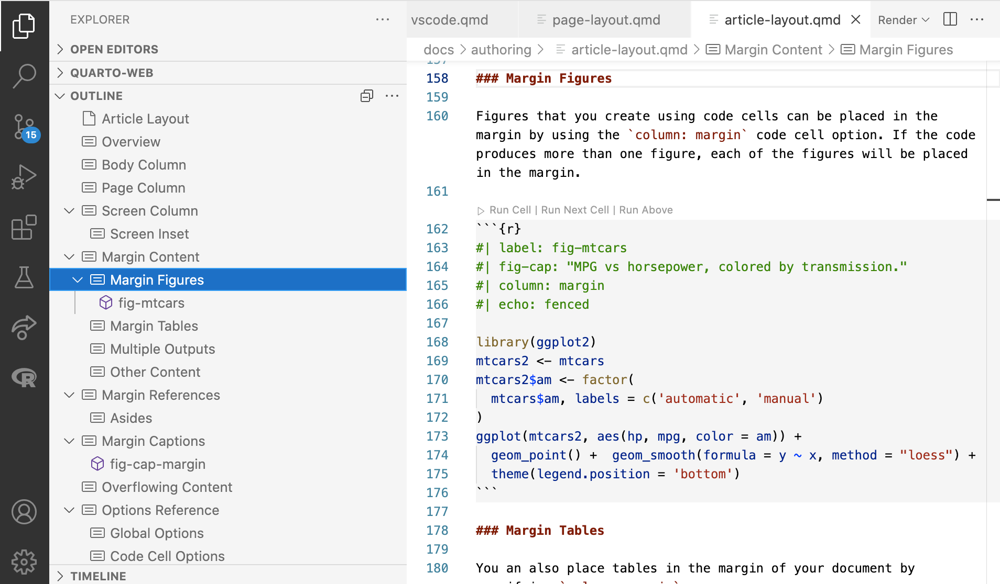
Screenshot from the Quarto VS Code documentation.
Let’s take a poll
Go to the event on wooclap
The workshop dataset
The study
A randomized trial of a hypothetical anti-inflammatory drug aimed at lowering HIV-acquisition risk by reducing genital inflammation.
- 44 participants: 23 placebo, 21 treatment
- 3 visits per participant: baseline, week 1, week 7
- All participants are female
At each visit, samples flow into five tables: 00_sample_ids, 01_participant_metadata, 02_visit_clinical_measurements, 03_elisa_cytokines, 04_flow_cytometry.
A fictitious dataset built to look like a real trial. See the dataset page for full descriptions.
Clinical measures (02_visit_clinical_measurements)
The low-dimensional measurements – one number per participant per visit:
nugent_score(0-10): Gram-stain score for bacterial vaginosis. 0-3 normal, 4-6 intermediate, 7-10 BV.crp_blood: C-reactive protein – general systemic inflammation marker.ph: vaginal pH. Low (~3.8-4.5) is the healthy lactobacillus-dominated state; higher suggests dysbiosis.
Inflammation panels (03_elisa_cytokines, 04_flow_cytometry)
The higher-dimensional measurements:
- Cytokines (10 of them: IL-1α/β, IL-6, IL-8, IL-10, TNFα, IP-10, MIG, IFN-γ, MIP-3α) – signaling proteins immune cells use to talk to each other. Higher concentration usually means more inflammation.
- Flow cytometry – counts cells by which proteins they display. We’ll touch this lightly – see the dataset page for the gating hierarchy.
Let’s start programming
What is programming?
Programming is giving the computer instructions using text. The tricky part is learning how to speak to a computer.
- Computers are incredibly literal
[1] FALSE- Computers care about punctuation
Error in parse(text = input): <text>:1:15: unexpected numeric constant
1: max(c(1, 2, 3 4
^- Computers only know what you tell them
Error:
! object 'my_age' not foundMost bugs happen because of one of these things.
What is programming?
So why bother at all? Because if you can tell a computer how to do it once, it is reproducible!
Find a mistake? Fix the code, then rerun.
Repeat the same analysis on new data – swap the file and rerun.
Share your code with others so they can start where you left off.
Let’s use R for math
In the console, try typing some commands:
You don’t have to finish all of them – get a feel for how R responds.
# arithmetic
3 + 5 + 10
10 * (5 + 1)
3**2 # what does the ** operator do in R?
# check inequalities and equalities
4 >= 1 # what does this mean?
5 + 4 == 9
# make some errors
"3" + 5 # why is this an error?
my_age + 5 # why is this an error?
# write a math expression to calculate what percentage
# of your life has been in post-secondary school/training
# (university, training programs, masters, PhD)Say hello to the text-editor
When you write code in the console, it is gone.
It is better to work inside quarto notebooks in order to be able to save and share your code and results.
What can you do with Quarto?
Many formats, one source
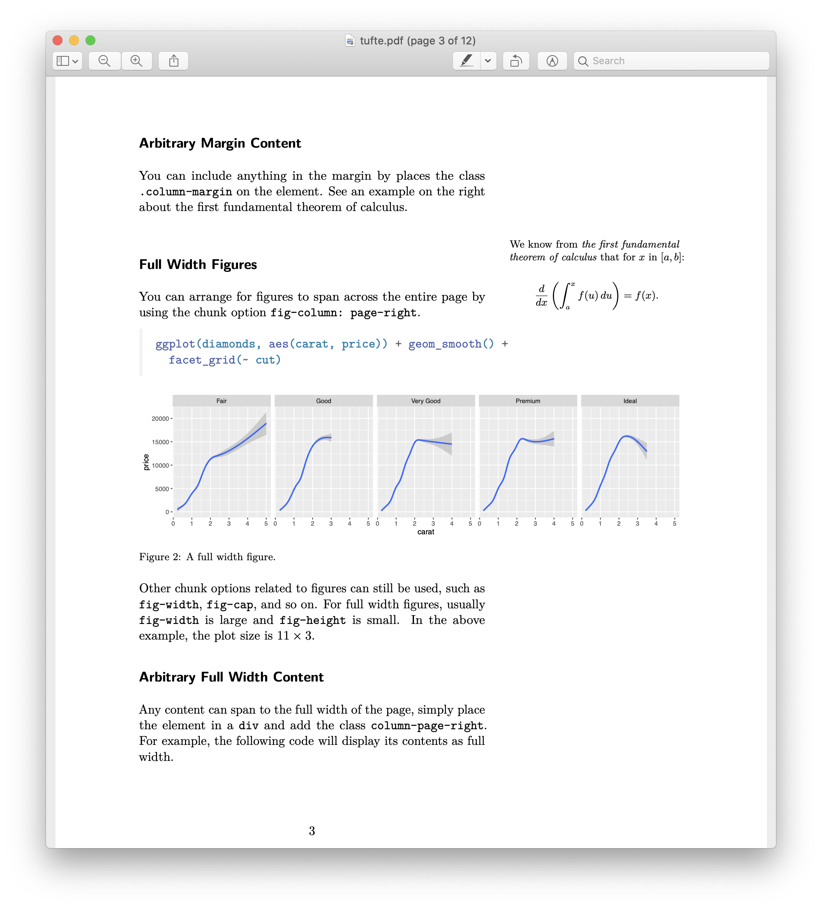
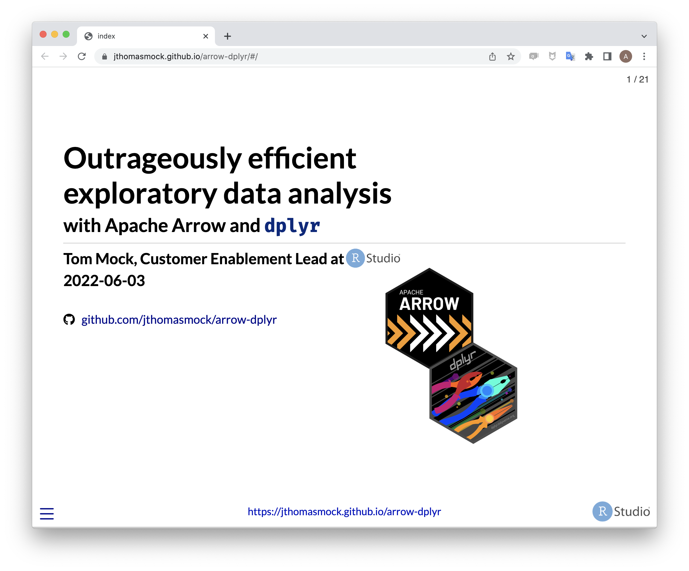
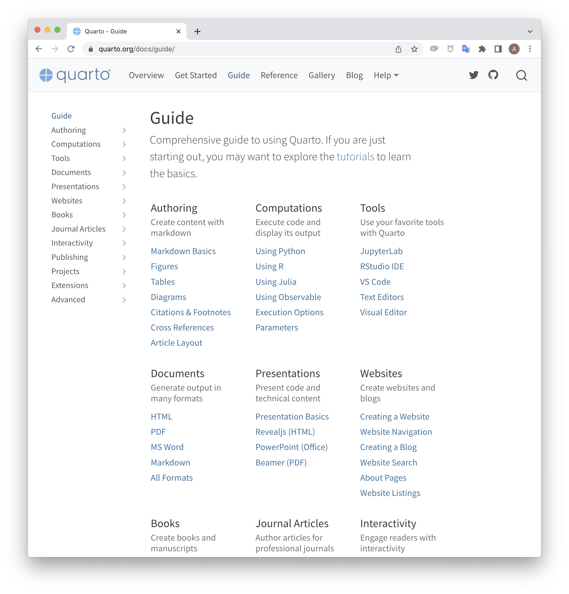
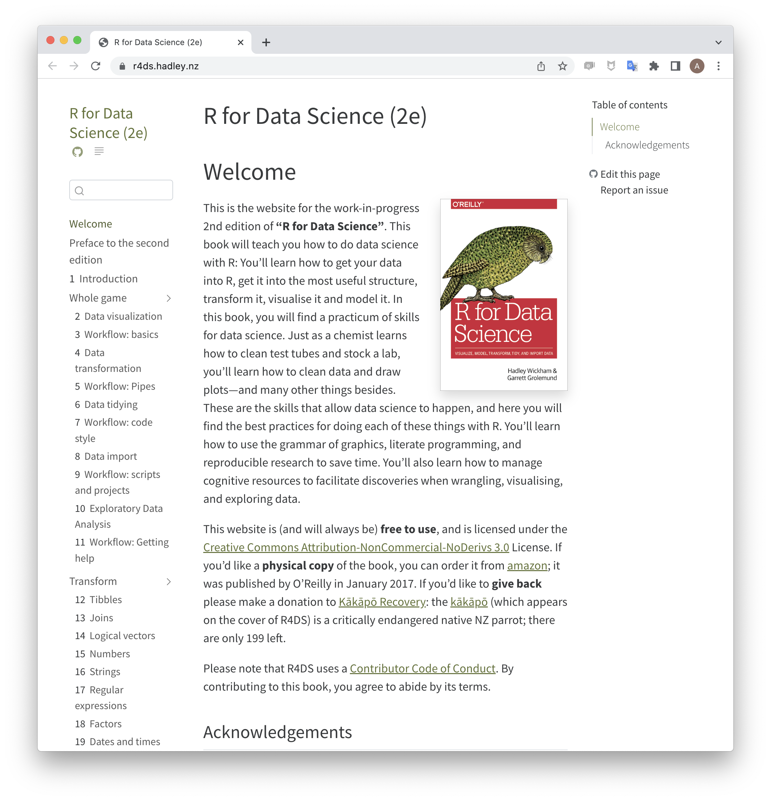
All from the same .qmd source – change the format in the YAML.
Quarto Render
Quarto works inside VS Code
Click (the Preview button) at the top of a .qmd open in VS Code.
Render input file to various document formats.
Input
*.qmd*.ipynb*.md*.Rmd
Format
htmlpdfrevealjs(like these slides!)docxppt- and many more!
Anatomy of a Document
- Code Cells
- Text
- Metadata
Code Chunks
Quarto’s Code Chunk
This is a Quarto Code Chunk.
Make a new code chunk in three ways:
- Type it out
- Use the Insert Code Cell command from the command palette
- click in your document and hit the key combination
Ctrl+Alt+i
Write a math expression in a chunk and press the Run Cell link at the top of the chunk.
Execution Options
Control how the code is executed with options. Options are denoted with the “hash-pipe” #|
| Option | Description |
|---|---|
eval |
Evaluate the code chunk (if false, just echos the code into the output). |
echo |
Include the source code in output |
output |
Include the results of executing the code in the output (true, false, or asis to indicate that the output is raw markdown and should not have any of Quarto’s standard enclosing markdown). |
warning |
Include warnings in the output. |
error |
Include errors in the output. |
include |
Catch all for preventing any output (code or results) from being included (e.g. include: false suppresses all output from the code block). |
Example: Figures from Code
Text
The Basics of Markdown
Markdown is designed to be easy to write and easy to read:
A Markdown-formatted document should be publishable as-is, as plain text, without looking like it’s been marked up with tags or formatting instructions.
-John Gruber
- Quarto uses extended version of Pandoc markdown.
- Pandoc classifies markdown in terms of Inline and Block elements.
Inline Elements: Text Formatting
Markdown
Output
Markdown allows you to format text with emphasis and strong emphasis. You can also add superscripts2, subscripts2, and display code verbatim. Little known fact: you can also strikethrough text and present it in small caps.
1
Inline Elements: Links and Images
Markdown
Output
You can embed links with names, direct urls like https://quarto.org/, and links to other places in the document. The syntax is similar for embedding an inline image: .
Markdown can do so much more
To learn about footnotes, Math, tables, and diagrams, check out the quarto documentation on markdown
Metadata: YAML
“Yet Another Markup Language” or “YAML Ain’t Markup Language” is used to provide document level metadata …
[… in key-value pairs,]
[… that can nest,]
[… are fussy about indentation,]
[… and are kept between ---.]
There are many options for front matter and configuring rendering.
R fundamentals, by way of our data
Read the data
The dataset lives in csv files (comma-separated values). Read one in with read_csv():
<- assigns the result to a name. After this line, table_02 is the data.
This is a tibble
# A tibble: 132 × 6
pid time_point arm nugent_score crp_blood ph
<chr> <chr> <chr> <dbl> <dbl> <dbl>
1 pid_01 baseline placebo 8 0.44 5.7
2 pid_01 week_1 placebo 7 1.66 5.2
3 pid_01 week_7 placebo 7 1.44 5.4
4 pid_02 baseline placebo 7 1.55 5.2
5 pid_02 week_1 placebo 7 0.75 4.8
6 pid_02 week_7 placebo 4 1.17 4.2
7 pid_03 baseline placebo 6 1.78 4.8
8 pid_03 week_1 placebo 10 0.57 5.3
9 pid_03 week_7 placebo 7 1.79 5.2
10 pid_04 baseline placebo 5 1.76 4.8
# ℹ 122 more rowsA tibble (R’s word for “data frame”) is rectangular: rows are observations, columns are variables.
Columns are vectors
Pull one column out with $:
[1] 8 7 7 7 7 4 6 10 7 5 9 7 8 3 2 10 8 8 7 7 5 9 5 7 5
[26] 3 4 8 0 1 7 1 4 8 6 9 8 7 8 7 5 7 7 3 3 6 0 2 5 2
[51] 3 6 1 6 7 5 5 4 8 5 5 1 4 6 3 6 8 8 3 5 7 4 3 4 2
[76] 7 0 4 7 5 8 3 1 1 7 4 3 7 8 7 6 2 2 5 1 3 6 1 2 8
[101] 4 7 8 5 3 8 5 8 5 1 2 8 5 4 6 2 5 3 2 6 4 2 4 6 5
[126] 7 6 6 6 6 1 3That’s a vector – a sequence of values, all the same type.
nugent_score: numericarm: character ("placebo","treatment")time_point: character (later we’ll make it a factor for ordering)
Functions
A function takes inputs and gives back a value:
table_02$crp_bloodis the positional argument – the data.na.rm = TRUEis a named argument – tellsmeanto skip missing values.
Most R verbs are functions called on a column or a tibble.
Assignment and naming
- Use
<-to assign (R people prefer it;=also works). - Names: lowercase with
_separators. No leading numbers, no special characters. - Good:
nugent_mean,cytokine_panel,n_participants - Avoid:
mean.nugent(dots are fine in R but confuse other languages),1st_table,mean nugent
Getting help
Type ?function_name in the console to open the help page. For example:
Or ask Pi (the coding agent from Module 1). Pi is good at explaining what a function does and suggesting how to call it. Treat its answers as a starting point – check them against the help page or run them and see, since Pi can hallucinate functions and arguments.
Using Pi in VS Code
Pi lives in your terminal
Pi is the coding agent you met in Module 1. Launch it with pi in the integrated terminal. It reads and writes files in your project.
Keep two terminals open: one for Pi, one for your own commands. (Remember the terminal-tabs trick from earlier in this module.)
Prompting Pi well
- Be specific about goal and inputs. “Read
02_visit_clinical_measurements.csvand show me the meannugent_scoreby arm” beats “look at the data.” - Show, don’t just tell. Paste the error. Paste the table head. Paste the chunk that broke.
- Ask why before what. “Explain what this does line by line” before accepting the code.
- Verify. Pi can hallucinate column names, function names, even packages. Run the code, read the output, push back when something looks off.
- Use Pi when syntax stumps you. Keep doing the thinking yourself – you learn by typing.
Models and cost
- Default:
deepseek/deepseek-v4-flash– cheap, fast, good for ~80% of what you’ll do. - Step up:
deepseek/deepseek-v4-pro– harder reasoning, multi-step debugging, when flash is stuck. - Switch with
/modelorCtrl+Linside Pi.
Your budget: ~$1.50/day, ~$30 for the week. Start with flash; step up only when you’re stuck.
Let’s take another poll
Go to the event on wooclap
Exercise
That’s enough slides for now – time to try for yourself. Go to the module and work through the worksheet.